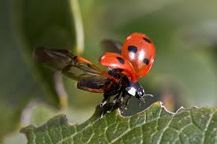
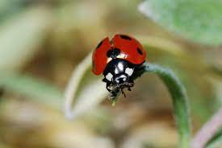
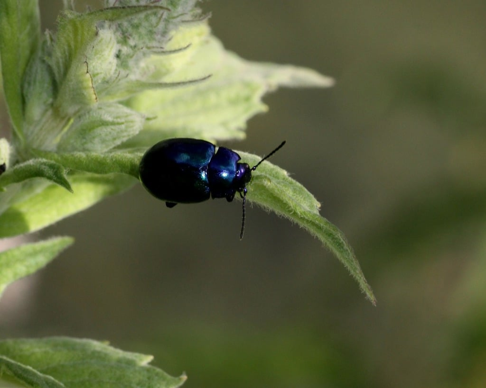

New Zealand Ladybug
Ladybugs are small, colorful beetles commonly found in gardens. They are beneficial insects that feed on pests such as aphids, helping to protect plants. Their bright red or orange shells with black spots make them easy to spot on leaves and flowers.
üåø Habitat: Gardens, parks, and areas with plants infested by aphids.
☀️ Active Time: Daytime; ladybugs are most active in warm and sunny conditions.
⚠️ What to Do if Found: Observe gently. Do not harm; ladybugs are helpful for your garden’s ecosystem.
Gallery


